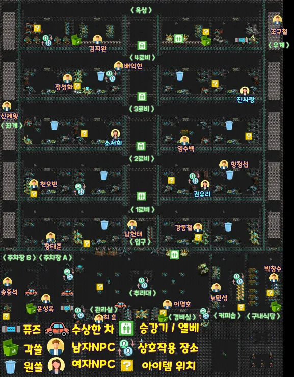

빠른 사용법
검색 우선순위: 아이템명으로 검색하면 상세 설명, 파밍 장소, 등장 횟수, 시체 조사 결과까지 한 페이지 안에서 찾을 수 있습니다.
파밍표 읽는 법: 각 장소에서는 목록의 아이템 중 하나를 무작위로 얻습니다. 목록의 모든 아이템을 한 번에 받는 것은 아닙니다.
추리게임 운명맵 지도/파밍 위치

게임 진행 흐름
승리 목표: 살인마는 설정된 횟수만큼 NPC/유저 살인에 성공하면 승리하고, 시민은 부검, 몸수색, 심증과 동선을 바탕으로 추리하여 투표로 살인자를 검거하면 승리합니다.
플레이어 살인: ON 설정이면 고정 2회 제한 없이 생존자가 4명이 남을 때까지 가능합니다. 다른 사망이 없다면 8인 시작은 최대 4명, 7인은 3명, 6인은 2명, 5인은 1명입니다. 4인 이하는 플레이어 살인 OFF이며, 생존자 4명부터는 추가 플레이어 살인이 차단됩니다. 가스폭파는 이 제한의 예외입니다.
- 파밍처음 시작하면 흩어져 아이템 파밍을 합니다. 살인자가 첫 번째 살인을 내기 전까지 진행합니다.
- 첫 시체 발견첫 시체를 발견하면 모두를 부른 뒤, 가장 가까운 쓰레기통이 있는 방으로 이동하여 모입니다.
- 추리대 진행모인 방에서 직업 공개, 아이템 교환, 시체 부검, 몸수색, 추리 및 심문을 진행합니다.
- 재분산정보 교환이 끝나면 다시 흩어지고, 다음 살인이 날 때까지 이리저리 돌아다닙니다.
- 반복5살 승리 모드라면 앞의 과정을 3번째 살인이 날 때까지 반복합니다.
- 최종 투표3번째 시체를 찾은 후 모여서 최종 투표를 진행합니다.
스타 원작과 다른 점
마인크래프트판은 스타크래프트 추리게임 운명의 직업·단서·추리 구조를 바탕으로, 새 도구와 교란·구조 수단을 더한 버전입니다. 원작 설명글과 R0.8 E까지의 패치 내역을 기준으로 비교했습니다. 원작글에 없는 추가 아이템과 옛 버전에서 삭제됐다가 돌아온 아이템을 구분해 보세요.
괄호의 숫자는 아이템 한 개의 기본 사용 횟수입니다. 시작 지급 수량이나 파밍 등장 수량이 아닙니다. 원작의 모든 버전을 같은 규칙으로 단정하지 않으며, 아래 설명은 현재 서버의 규칙을 기준으로 합니다.
1. 원작글에 없는 추가 아이템 — 9종
| 아이템 / 사용 직업 | 마인크래프트판에서 추가된 사용법 | 추리할 때 주의할 점 |
|---|---|---|
| 비옷(1) 모든 직업 | 소지하면 몸 대신 비옷에 피가 묻습니다. 피 묻은 비옷은 넘기거나 쓰레기통을 통해 다른 사람에게 전달할 수 있습니다. 세탁해도 루미놀 잔류 반응이 남고, 과산화수소로 정화할 수 있습니다. | 받은 시민에게도 혈흔·잔류 반응이 나타날 수 있습니다. 피가 검출됐다는 이유만으로 직접 살인했다고 확정할 수 없습니다. 원작의 저격 방지 방탄복과는 다른 기능입니다. |
| 호루라기(1) 모든 직업 | 우클릭하면 자신의 현재 위치를 참가자들의 미니맵에 알립니다. 알바생 전용 능력이 아니라 누구나 사용할 수 있는 별도 공용 아이템입니다. | 원작의 자기 위치 공개 기능과 비슷하지만, 현재 서버의 알바생 위치공유는 다른 사람을 추적하는 도구로 구분됩니다. |
| 전파방해기(1) 살인마 | 살인 성공 후 남은 쿨타임이 31~120초일 때 사용합니다. 남은 시간 30초에 나올 사망 위치 공개와 화면의 사망 인원 증가를 숨깁니다. 실패 타이머에는 사용할 수 없습니다. | 살인 자체나 승리 카운트가 취소되지는 않습니다. 공개가 없었다고 살인이 일어나지 않았다고 단정하지 마세요. |
| 구급키트(1) 모든 직업 | 사망 후 30초 이내 NPC 시체를 우클릭해 구조합니다. 성공하면 그 살인이 승리 카운트에 반영되지 않습니다. 플레이어 시체와 특수 즉사 NPC는 제외됩니다. | 원작에도 의사의 응급처치는 있었습니다. 구급키트는 그 능력을 새로 만든 것이 아니라, 더 짧은 시간 안에 누구나 구조할 수 있게 더한 공용 아이템입니다. |
| 휴대용 금속 탐지기(1) 탐정·공대생·알바생 | 살아 있는 참가자 가까이에서 우클릭하면 금속 도구 소지 여부만 사용자에게 알려줍니다. 좌클릭으로 반응 목록과 예시를 볼 수 있습니다. | 구체적인 품목은 공개하지 않습니다. 금속 도구를 넘겨받은 시민도 반응하고, 독·수건 등은 반응하지 않으므로 양성·음성 어느 쪽도 단독 확정 근거가 아닙니다. |
| 버려진 가방(1) 모든 직업 | 매 게임 왼쪽 또는 오른쪽 비상계단에 총 1개 생성됩니다. 조규철 자리는 제외합니다. 5칸 안에서 벽에 가리지 않았을 때 이름이 보이며, 가까이서 바라보고 좌/우클릭해야 줍습니다. 소지 후 클릭하면 독판별(3)·시체상태(∞)·돋보기(∞)·몸수색(1) 중 하나를 고릅니다. | NPC나 지나가는 플레이어가 자동으로 줍지 않습니다. 선택한 조사 도구의 직업 제한은 그대로입니다. 가방은 일반 아이템으로 무게에 포함되고 훔치기 대상도 됩니다. |
| 맹독다트(2) 살인마 | 우클릭으로 발사해 맞히면 10초 뒤 사망합니다. 사망 전 해독제로 생존할 수 있고 지연도구로 대기를 30초 늘릴 수 있습니다. 레이저사이트와도 연계됩니다. | 주입 독처럼 붙어서 먹이는 방식이 아닌 원거리 지연 독살입니다. 빗나가면 살인 실패 쿨타임이 생깁니다. |
| 지뢰(1) 살인마 | 설치 후 10초 대기 → 30초 활성. 반경 1.5칸에서 현재 NPC/PLAYER 살인 모드에 맞는 대상을 감지합니다. | 지뢰 작동 중에는 다른 살인 도구를 사용할 수 없습니다. 아무도 걸리지 않고 끝나면 실패 120초 쿨타임이 생깁니다. 지연도구로 지뢰 시간을 늘릴 수는 없습니다. |
| 원격C4기폭장치(1) 살인마 | 10초 설치 → 30초간 기폭 장치 활성. 장치를 우클릭하면 반경 2칸 안에서 현재 살인 모드에 맞는 대상 1명을 공격합니다. 활성 시간이 다 되면 누르지 않아도 자동 폭파됩니다. | 가스폭파처럼 범위 안 전원을 죽이는 도구가 아닙니다. 지연도구로 활성 시간을 30초씩 연장할 수 있고, 작동 중에는 다른 살인 도구 사용이 제한됩니다. |
2. 원작에서 삭제됐다가 재도입·개편된 아이템 — 4종
아래 아이템은 완전 신규가 아닙니다. 원작의 예전 버전에 있던 이름·기능을 다시 활용하면서 현재 서버에 맞게 바꿨습니다.
| 아이템 | 원작 패치 기록 | 현재 서버의 사용법과 차이 |
|---|---|---|
| 수혈팩(1) | R0.2에서 삭제되고 초시계가 추가됐습니다. | 살인마가 응고제를 좌클릭해 변환합니다. 출혈이 없는 시체를 우클릭하면 다시 피가 나오게 하여 혈흔 단서를 교란합니다. 이미 출혈 중인 시체에는 사용할 수 없습니다. |
| 얼음(1) | R0.8에서 삭제되고 누전방지퓨즈가 추가됐습니다. 원작의 누전방지퓨즈는 3분간 정전 시도를 막는 도구였습니다. | 현재는 발전기/퓨즈에서 사용합니다. 시민은 5분 동안 정전 발생 시 3초 뒤 자동 복구되게 하고, 살인마는 30초 뒤 정전을 예약합니다. 정전이 아예 시작되지 않는 방식과는 다릅니다. |
| 소음기(3) | R0.7에서 삭제됐습니다. | 리볼버·네일건 소지 후 우클릭으로 ON/OFF합니다. ON 상태의 실제 발사 3회까지 총성을 억제합니다. 단순히 켜는 순간이 아니라 실제로 총성을 억제한 순간 감지센서에 걸립니다. |
| 녹음테이프(1) | 남·여 테이프가 있었으나 R0.7에서 삭제됐습니다. | 현재는 소리 선택 GUI를 씁니다. 시민은 호루라기·카톡, 살인마는 격발음·남/여 비명·폭발 등 모든 선택지를 고를 수 있습니다. 설정 후 우클릭하면 한 번 재생하고 소모되며, 좌클릭하면 다시 선택할 수 있습니다. 실제 무기가 아닌 일반 아이템입니다. |
3. 원래 있던 아이템·능력의 주요 개편
| 항목 | 원작 설명 | 현재 서버의 차이 |
|---|---|---|
| 알바생 위치공유(1) | 장소 제한 아래 자신의 위치를 다른 플레이어에게 알립니다. | 다른 생존자를 추적합니다. 우클릭해 7칸 안 대상을 선택하고 5초 뒤 다시 우클릭하면 2~6회 중 보고 횟수가 정해집니다. 10초 뒤 첫 보고, 이후 30초마다 위치를 확인하며 대상 사망·접속 종료 시 중단됩니다. 자기 위치를 알리는 용도는 별도 호루라기가 맡습니다. |
| 테슬라 자동차키(1) | 밖의 수상한 자동차에 접근해 즉시 살인합니다. | 밖의 노란 자동차에서 우클릭해 NPC 선택 GUI를 엽니다. 선택한 NPC는 15초 뒤 사망하며 플레이어를 고를 수 없습니다. 이동용 자동차키가 아닙니다. |
| 레이저사이트(1) | 리볼버·수렵석궁으로 특정 외부 대상을 저격하며, NPC 모드에서는 최훈·이명호 중 무작위 공격을 합니다. | 202·501 저격 구역에서 대상 NPC를 선택합니다. 리볼버·수렵석궁 외에 맹독다트도 연계할 수 있고 저격 1회 후 사이트가 해제됩니다. |
| 지연도구(1) | 살인 대기 30초 연장. 최종 패치에서는 중복 사용을 금지했습니다. | 여러 개를 연속 사용해 피살 대기·원격 C4 시간을 30초씩 연장할 수 있습니다. 일반 120초 살인 쿨타임이나 지뢰 시간은 연장하지 않습니다. |
| 공구상자(1) | 시민은 손전등·초시계·망원경·비상열쇠 중 무작위 1개, 살인마도 정해진 보조 도구 중 하나를 얻습니다. | 시민의 4종 무작위 획득은 유지합니다. 살인마는 선택 GUI에서 녹음테이프·레이저사이트·증거인멸·지연도구·얼음·비옷·수면제·전파방해기·응고제·소음기 중 고릅니다. 전파방해기는 위치공개 ON일 때 보이고, 테이프가 자동으로 덤 지급되지는 않습니다. |
| 시체수거(1)·유기 | 시체를 인벤토리로 옮겨 위치 공개를 숨기고 수거함에 유기합니다. | 현재는 본인이 죽인 시체를 살인 타이머 1:00 이전에 수거해야 합니다. 시체 아이템은 넘기기·훔치기로 이동할 수 있으나, 입구 잭오랜턴 수거함에 넣어야 살인 카운트가 인정됩니다. 다른 사람에게 넘기거나 일반 쓰레기통에 넣는 것만으로는 인정되지 않습니다. |
| 감지센서(1) | 원작에도 살인자의 보조 도구 사용을 감지하는 능력이 있습니다. | 현재는 시체수거·지연도구·레이저사이트·증거인멸·전파방해기와 소음기의 실제 총성 억제를 감지합니다. 첫 감지 후 종료되므로 다시 감지하려면 새 센서가 필요합니다. 수면제·얼음·응고제·수혈팩은 대상이 아닙니다. |
4. 마인크래프트판에서 달라진 판정과 표현
- 플레이어 살인 제한: 현재 서버는 고정 2회가 아니라 생존자가 4명 남을 때까지 허용합니다. 다른 사망이 없다면 8인 시작은 4회, 7인은 3회, 6인은 2회, 5인은 1회입니다. 4인 이하는 OFF이며 가스폭파는 예외입니다. 이는 현재 서버 규칙이며 원작의 모든 버전이 고정 2회였다는 뜻은 아닙니다.
- 도구 횟수와 정보 은폐: 독판별·관찰은 같은 물건을 넘겨도 각 사용자의 기존 잔여 횟수를 따로 기억합니다. 살인 도구의 실제 잔여 횟수는 살인마에게만 보이며 시민·쓰레기통에는 기본 횟수처럼 보입니다. 표기만 달라지고 내구도가 회복되지는 않습니다.
- 개별 아이템 관리: 같은 종류도 합치지 않고 개별 도구로 유지하며, 여러 개가 있으면 남은 횟수가 적은 도구부터 소모합니다. 이는 스타의 인벤토리 모양을 그대로 옮긴 것이 아니라 마인크래프트 인벤토리에 맞춘 판정입니다.
- 성공 후 사망음: 기존 무기별 공격 비명과 별도로, NPC는 살인 타이머 1:00에 그 NPC의 음성이 한 번 재생됩니다. 구조·수거된 시체는 재생하지 않습니다. 플레이어는 실제 사망 위치에서 즉시 재생합니다. 소리는 발생 시점의 실제 전송 범위 안에 있고 벽에 가리지 않은 사람에게만 전달됩니다.
- 구조 마감: 의사의 응급처치는 NPC 사망 60초 미만이면서 타이머 1:00 도달 전이어야 합니다. 1:00에 도달한 시체는 응급처치·시체수거가 끝난 상태입니다. 공용 구급키트의 30초 제한과 혼동하지 마세요.
- 색상·화면 표현: 스타의 8색에 맞춘 커스텀 갑옷·익명 이름·칭호를 사용하고, 갑옷 앞뒤 자음으로 색 구분을 보조합니다. 지도에서 보이는 참가자 표시는 실제 전송 범위와 벽 가림을 반영하며, 정전 중에는 일반 시야의 타인 표시가 숨겨집니다. 살인마 감시·기존 위치 공개는 별도 표시입니다.
- 관전 보조: 살아 있는 참가자 전원의 색상 위치를 지도에 표시하고, 문·엘리베이터를 이용해도 따라가는 시점을 복구합니다. 인벤토리는 대상의 실제 칸 배치를 유지하며 살인마 전용 도구도 관전자에게 공개합니다. 관전 자체가 신규인 것은 아니며, 마인크래프트판의 이동·정보 확인 방식으로 확장한 부분입니다.
- 조작·대화 편의: 자동 이동·패트롤·수동 이동을 함께 제공하고 서로 속도를 맞췄습니다. 플레이어는 서로를 밀어 움직이게 하지 않고 장애물처럼 부딪힙니다. 본인 채팅과 타인 채팅의 본문 색을 구분하고, 허용된 사용자는 채팅용 표시 이름을 바꿀 수 있습니다. 패트롤이나 채팅이라는 개념 자체가 원작에 없었다는 뜻은 아닙니다.
파밍 장소표
| 장소 검색어 | 파밍 후보 아이템 | 아이템 종류 수 | 메모 |
|---|---|---|---|
| 102호, 102, 소파 | 클라리넷 / 비상열쇠 / 골프채 / 관찰 / 휴대용 금속 탐지기 | 5 | 금속탐지기 추가됨. |
| 103호, 103 | 긴급대피 / 협조요청 / 응급처치 / 범위분석 | 4 | 직업 보조 아이템 중심. |
| 201호, 201 | 몸수색 / 독판별 / 과산화수소 / 공구상자 | 4 | 조사와 정리 아이템 중심. |
| 203호, 203 | 수면제 / 펜토바르비탈 / 루미놀반응조사 / 주사기 | 4 | 독 관련 단서가 모임. |
| 302호, 302 | 지연도구 / 시체상태 / 돋보기 / 은신 | 4 | 조사 아이템과 은신. |
| 304호, 304, 컴퓨터 | 송곳 / 비상열쇠 / 가위 / 손전등 / 호루라기 / 구급키트 | 6 | 구급키트와 호루라기 추가됨. |
| 402호, 402 | 망원경 / 해독제 / 염산테러 / 수산화나트륨 | 4 | 화학 계열 아이템 포함. |
| 404호, 404 | 수건 / 아이템 제거 / 시체수거 / 초시계 | 4 | 은폐와 시간 확인 계열. |
| 501, 창고, 옥상창고 | 네일건 / 수렵석궁 / 리볼버 / 전기톱 / 맹독다트 / 소음기 | 6 | 원거리 무기 핵심 파밍. |
| 503, 휴게실 | 증거추리 / 강령술 / 위치공유 / 감지센서 | 4 | 직업 특수 아이템 중심. |
| 주차장B, 주차장b, 공구함 | 지연도구 / 손전등 / 레이저사이트 / 가스폭파 / 지뢰 / 원격C4기폭장치 | 6 | C4 추가됨. 폭발 계열 주의. |
| 좌측의자, 의자 | 비상열쇠 / 루미놀반응조사 / 은신 / 와이어케이블 | 4 | 루미놀과 교살 도구. |
| 경비실 | 손톱 / 테슬라 자동차키 / CCTV확인 / 얼음 | 4 | 얼음은 누전방지퓨즈/정전 관련 아이템. |
| 구내식당 | 응고제 / 식칼 / 쇠파이프 / 얼음 | 4 | 근접 무기와 정전 대응. |
| 커피숍 | 독판별 / 증거인멸 / 그라목손 / 비옷 | 4 | 조사 도구와 혈흔을 숨기는 아이템. |
| 왼쪽·오른쪽 비상계단 | 버려진 가방 → 독판별 / 시체상태 / 돋보기 / 몸수색 중 1개 선택 | 가방 1개 · 선택 4종 | 게임마다 양쪽 계단 중 한 곳에 총 1개. 가까이에서 바라보고 좌/우클릭하여 획득. |
일반 아이템 상세
가방을 손에 들고 좌/우클릭하면 독판별·시체상태·돋보기·몸수색 중 하나를 고를 수 있습니다. 선택하면 도구를 얻고 가방은 사라집니다. 도구의 직업·대상 제한은 그대로 적용됩니다.
인게임에서 /help 또는 채팅에 help를 입력하면 이 도움말이 열립니다. 도움말의 아이템 이름은 수건(2), 독판별(3), 시체상태(∞)처럼 새 아이템의 기본 사용 횟수를 표시합니다. (∞)는 무제한입니다. 은신(1)은 1회 사용 후 3분 동안 ON/OFF 가능, 손전등(1)은 배터리 총 20초, 비옷(1)은 한 벌의 보호 효과를 뜻합니다. 인게임 이름의 (숫자)는 남은 사용 횟수이며 실제 아이템 수량과는 다릅니다. 독판별·관찰의 사용 횟수는 아이템별·사용자별로 관리됩니다.
독판별·관찰 넘겨주기 예시: 같은 도구라도 각 사용자는 처음 3회씩 사용할 수 있고, 사용 기록은 따로 남습니다. A가 1회 써서 A는 2회 남음 → B에게 넘겨 B가 2회 써서 B는 1회 남음 → 다시 A에게 돌려주면 A는 원래 기록대로 2회 남아 있습니다. 돌려받았다고 횟수가 초기화되거나 상대방 기록으로 바뀌지 않습니다. 도구 이름의 숫자는 현재 소지자의 남은 횟수를 표시합니다.
| 아이템 | 사용자/조건 | 효과 |
|---|---|---|
| 비상열쇠(1) | 모든 직업. 시민 1회, 살인마 무한. | 옥상 오른쪽 휴게실과 오피스텔 밖 사이를 편도 이동. |
| 비옷(1) | 소지 중 혈흔을 맞을 때 작동. | 몸 대신 비옷에 피가 묻음. 피 묻은 비옷을 버리거나 넘기면 관찰/루미놀 혈흔 검출을 피할 수 있고, 줍거나 넘겨받은 사람은 검출될 수 있음. |
| 손전등(1) | 우클릭. 정전 전에 미리 활성화 가능. | 배터리는 정전 중에만 소모되며 총 20초 동안 시야를 확보함. |
| 수면제(2) | 2칸 안 살아 있는 NPC에게 우클릭. | 이동을 멈추고 이후 살해당해도 비명을 차단함. 시민이면 움직이는 NPC에만 사용 바랍니다. (동선을 정확하게 하기 위함) 정지 NPC 사용을 시스템으로 막지는 않음. |
| 호루라기(1) | 모든 직업. | 사용 즉시 모든 플레이어에게 자신의 위치가 미니맵에 찍힘. |
| 초시계(1) | 모든 직업. 우클릭. | 기존 타이머 조회가 아니라 새 120초 타이머를 시작함. 시민은 누군가와 접촉한 뒤 독에 걸렸는지 판단하는 데, 살인마는 살인 여부를 교란하는 데 활용. 살인 대기·기존 쿨타임 중에는 아무 메시지 없이 사용·소모되지 않음. |
| 응고제(1) | 피가 나는 시체 대상. 살인마는 좌클릭 변환 가능. | 시체의 출혈을 멈추고 혈흔 목록에서 주변 피를 제거. 살인마는 수혈팩으로 변환 가능. |
| 수혈팩(1) | 피가 나지 않는 시체 대상. | 시체에서 다시 피가 나오게 함. 응고제와 반대 역할. |
| 아이템 제거(1) | 모든 직업. | 사용 후 버릴 아이템을 “아이템 버림”으로 보내 제거. |
| 망원경(1) | 옥상 복도/망원경 사용 구역에서 우클릭. | 사용마다 20~40초 중 무작위로 정한 시간 동안 건물 밖 이동 정보를 확인함. 은신도 감지하고 랜드마크 근처 이동과 연동. 사용 구역을 벗어나면 종료. 사용 중 재사용은 아이템 소모·남은 시간 변경 없이 차단됨. |
| 해독제(1) | 사망 대기가 끝나기 전에 우클릭. | 이미 들어온 6종 주입 독과 맹독다트를 중화함. 중독되지 않아도 소모되며 미리 마셔도 예방 효과는 없음. |
| 공구상자(1) | 시민/살인마 모두 우클릭. 살인마는 GUI 선택. | 시민은 망원경/초시계/손전등/비상열쇠 중 랜덤 1개. 살인마는 녹음테이프, 레이저사이트, 증거인멸, 지연도구, 얼음, 비옷, 수면제, 전파방해기, 응고제, 소음기 중 1개 선택. 전파방해기는 위치공개 ON일 때 표시. 녹음테이프가 자동 추가 지급되지는 않음. |
| 과산화수소(1) | 혈흔·루미놀 잔류·오염 비옷 보유 시 우클릭. | 몸의 피와 루미놀 잔류를 지우고 소지 중인 피 묻은·세탁된 비옷도 모두 정화함. 인벤·왼손·커서 모두 포함. 이후 오염 비옷을 다시 받으면 관찰·루미놀에 정상 검출됨. |
| 얼음(1) | 발전기/퓨즈 구역. | 살인마가 사용하면 30초 뒤 정전. 시민이 사용하면 5분 동안 정전 발생 시 3초 뒤 자동 복구. 원작 누전방지퓨즈의 ‘정전 시도 자체 차단’과는 다름. |
| 녹음테이프(1) | 좌/우클릭으로 설정 GUI. | 설정한 소리를 1회 재생. 시민은 호루라기/카톡만, 살인마는 리볼버/네일건/비명/가스폭파 등 모든 소리 가능. |
| 구급키트(1) | 모든 직업. NPC 시체 전용. 사망 후 30초 이내. | NPC 시체를 긴급 후송 처리하고 살인 카운트가 올라가지 않음. 플레이어 시체에는 사용 불가. |
| 버려진 가방(1) | 모든 직업. 계단 바닥에서 좌/우클릭으로 획득. | 손에 들고 좌/우클릭 → 독판별·시체상태·돋보기·몸수색 선택 GUI. 하나를 선택하면 도구 1개를 지급하고 가방 1개 소모. 선택 도구의 직업 제한은 유지. |
직업 아이템 상세
| 아이템 | 사용 가능 직업 | 효과 |
|---|---|---|
| 시체상태(∞) | 경찰, 의사 | 시체에 사용해 외관 상태 문구를 확인. |
| 돋보기(∞) | 탐정, 연구원 | 시체 주변 흔적 문구를 확인. |
| 독판별(3) | 연구원, 의사 | 시체의 독 성분/독살 여부를 확인. 같은 도구라도 사용자별 처음 3회씩 별도로 기록. A가 1회 사용해 2회 남고, B가 넘겨받아 2회 사용해 1회 남아도, A에게 돌려주면 A는 다시 2회 남은 상태로 사용 가능. 이름의 숫자도 현재 소지자 기준으로 갱신됨. |
| 몸수색(1) | 경찰, 소방관 | 2칸 안 생존 플레이어 우클릭. 살인·보조 아이템 목록만 출력하며 일반 테이프는 제외. 경찰은 소방관 수색 불가, 여성은 협조요청 필요. 소방관은 여성 수색 불가. 증거추리 중 탐정은 경찰 기준 적용. |
| 휴대용 금속 탐지기(1) | 탐정, 공대생, 알바생 | 살아 있는 참가자에게 가까이 다가가 우클릭하면 금속 도구 소지 여부를 사용자에게만 알려줌. 어떤 도구인지는 공개하지 않으며, 도구를 넘겨받은 시민도 반응하므로 살인마 확정은 아님. 좌클릭으로 반응 목록·예시 확인. 소리만 재생하는 녹음테이프(예: 리볼버테이프)와 게임 조작용 자동무빙·패트롤은 반응하지 않음. 자세한 예시는 아래 반응표 참고. |
| 관찰(3) | 무당, 탐정 | 2칸 안 생존 플레이어 우클릭으로 성별·혈흔·가방 무게 확인. 사용 횟수는 독판별처럼 같은 도구에 대해서도 사용자별 3회씩 따로 기록되며, 돌려받으면 본인의 기존 남은 횟수가 유지됨. 무게는 시스템 아이템을 제외한 실제 아이템 수량 합계이며 이름의 남은 사용 횟수와 무관. 6개 이하 가벼움, 7~9개 적당, 10개 이상 무거움. 수건(2) 아이템 2개는 무게 2, 독판별(3) 1개는 무게 1. |
| CCTV확인(1) | 알바생, 소방관 | 우클릭하면 30~60초 중 무작위로 정한 시간 동안 1~4층 엘리베이터 이동 정보를 확인함. 개인 은신 중인 플레이어는 감지하지 않으며 이전 이동 기록도 숨김. 사용 중 재사용은 아이템 소모·남은 시간 변경 없이 차단됨. |
| 은신(1) | 무당, 공대생 | 우클릭으로 권한을 얻은 순간부터 3분. F키로 ON/OFF하며 꺼두거나 정전 중이어도 시간이 흐름. 정전 중 F키 허용; 개인 은신을 꺼도 정전의 투명화는 유지됨. 전기가 돌아왔을 때 아직 남은 개인 은신 ON 상태는 유지됨. 3분 뒤 재활성화 불가, 투표 진입 시 즉시 종료. |
| 루미놀반응조사(1) | 공대생, 알바생 | 다른 플레이어의 혈흔 여부 확인. 피 묻은/세탁된 비옷도 감지 조건에 포함. |
| 협조요청(1) | 경찰 | 첫 우클릭으로 여성 수색 권한을 획득하며 이후 계속 유지됨. 이미 활성화한 상태에서 다시 사용하면 몸수색 1개로 바뀜. |
| 응급처치(1) | 의사 | 사망 60초 미만이며 살인 타이머 1:00에 도달하기 전인 NPC 시체를 우클릭해 구조하고 살인 카운트를 취소함. 1:00 도달 후·플레이어 시체·특수 즉사 NPC에는 사용 불가. |
| 범위분석(1) | 연구원 | 우클릭으로 각 층의 생존 참가자 수 확인. 본인 포함, 사망자·관전자 제외. 엘리베이터·계단·옥상·외부 구역은 제외. |
| 증거추리(1) | 탐정 | 우클릭 후 30초간 모든 직업 전용 아이템 사용 권한을 얻음. 대상·성별 등 제한은 그대로이며 몸수색은 경찰 기준으로 적용. |
| 긴급대피(1) | 소방관 | 2칸 안 살아있는 NPC 우클릭으로 대피시키고 이후 살인을 막음. 이미 사망 대기 중인 NPC에게는 메시지·아이템 소모 없이 사용되지 않음. |
| 감지센서(1) | 공대생 | 우클릭으로 1회 감지를 준비. 살인마의 시체수거·지연도구·레이저사이트·증거인멸·전파방해기 및 소음기의 실제 총성 억제를 감지함. 소음기 ON 전환만으로는 감지하지 않으며 수면제·얼음·응고제·수혈팩은 제외. 첫 감지 후 종료되므로 새 감지센서를 다시 활성화해야 함. |
| 강령술(2) | 무당 | 살아있는 NPC에 우클릭. 살해되면 위치 알림·추적 나침반 지급. 해당 살인 쿨타임이 60초 남을 때 추적 나침반이 사라짐. |
| 위치공유(1) | 알바생 | 우클릭해 7칸 안 대상 선택 GUI → 선택 후 5초 대기 → 같은 아이템 재우클릭. 시작 시 보고 횟수 2~6회 중 무작위 선택, 10초 뒤 첫 보고 및 이후 30초 간격 보고. 대상 사망·접속 종료 시 남은 보고는 알림 없이 중단됨. |
살인마 전용 기능
살인마에게 제공되는 기능입니다. 플레이어 감시는 자동 기능이며, 플레이어 살인과 NPC 살인은 같은 살인 모드 전환 아이템으로 선택합니다.
1. 훔치기
상대에게 바짝 붙어 일반 아이템 훔치기 / 살인 아이템 훔치기를 들고 우클릭하면, 해당 종류의 아이템 하나를 무작위로 훔칩니다. 원하는 아이템을 직접 선택할 수는 없습니다.
- 일반 아이템 훔치기: 조사·보조용 일반 아이템을 훔칩니다. 버려진 가방도 포함됩니다.
- 살인 아이템 훔치기: 살인 도구·보조도구·증거품 등을 훔칩니다. 넘겨준 수거 시체도 다시 가져올 수 있습니다.
- 대상은 1.5칸 이내에 있어야 하며, 범위 안에 여러 명이 있으면 사용할 수 없습니다.
- 횟수 제한은 없지만, 성공 후 두 종류 모두 1.5초간 재사용할 수 없습니다.
2. 넘기기
아이템 넘기기 ON/OFF를 우클릭해 켠 뒤, 상대에게 바짝 접근하여 넘길 아이템을 들고 버리기 키(기본 Q)를 누르면 상대 인벤토리에 몰래 넣습니다. 바닥에 버리는 기능이 아닙니다.
상대는 1.5칸 이내에 있어야 하며, 주변 2칸 안에 다른 플레이어가 두 명 이상 있으면 사용할 수 없습니다. 기본 지급 도구와 살인마 기능 아이템은 넘길 수 없습니다.
다시 우클릭하면 OFF가 됩니다. 성공한 넘기기는 1.5초 뒤 다시 사용할 수 있습니다. 넘긴 아이템은 해당 종류의 훔치기로 다시 가져올 수 있습니다. 받는 사람의 인벤토리가 꽉 차면 넘기지 않고 원래 소지자에게 남습니다.
3. 퓨즈 끄기
퓨즈 내리기 (1회용)를 들고 우클릭하면 즉시 정전을 일으킵니다. 살인마는 정전 중에도 시야를 확보하지만, 시민은 손전등 등의 도움이 없으면 시야가 차단됩니다.
옥상 발전기실 또는 주차장 A구역의 발전기(G/E) 표지판을 우클릭하면 정전을 해제할 수 있습니다. 시민이 설치한 얼음의 정전 방지 효과가 남아 있으면 3초 뒤 자동 복구됩니다. 사용한 아이템은 소모됩니다.
4. 플레이어 감시
살인마의 미니맵에는 오피스텔 안 생존 플레이어의 위치가 15초마다 빨간 표시로 4초간 나타납니다. 별도로 클릭하거나 아이템을 사용할 필요는 없습니다.
표시는 감시 시점의 위치이며, 실시간으로 따라 움직이는 표시는 아닙니다.
은신을 켠 플레이어는 감시에 표시되지 않습니다. 따라서 표시가 없다고 그 장소에 아무도 없다고 단정할 수는 없습니다.
5. 자살 / 포기
살인자 자살 (포기)를 들고 우클릭하면 게임을 포기합니다. 살인마의 정체가 공개되고 고립 엔딩으로 종료되며, 살인마 패배·시민 승리로 기록됩니다.
되돌릴 수 없으므로 신중하게 사용하세요.
6. 플레이어 살인
플레이어 살인 설정이 ON인 게임에서 살인 모드 전환을 우클릭해 PLAYER 모드로 바꾼 뒤, 살인 도구로 다른 플레이어를 공격합니다. 모드 전환 아이템 자체가 살인 무기는 아닙니다.
고정 2회 제한 없이 생존자가 4명 남을 때까지 가능합니다. 4명이 남으면 추가 플레이어 살인이 차단되고 NPC 모드로 바뀝니다.
다른 사망이 없다면 8인 시작은 최대 4명, 7인은 3명, 6인은 2명, 5인은 1명을 살해할 수 있습니다. 4인 이하로 시작하면 플레이어 살인은 OFF입니다. 가스폭파는 이 제한의 예외입니다.
7. NPC 살인
게임 시작 시 기본 모드는 NPC 모드입니다. 살인 도구를 사용해 살아 있는 NPC를 살해합니다. PLAYER 모드라면 살인 모드 전환을 우클릭해 NPC 모드로 돌아오세요.
근접 무기·주입 독은 가까이 접근해 좌/우클릭하고, 원거리·설치형 도구는 각 아이템의 사용법을 따릅니다. 도구에 따라 즉시 사망하거나 일정 시간 뒤 사망하므로, 바로 죽지 않았다고 실패한 것은 아닙니다.
살인 대기·쿨타임 중에는 다음 살인을 시작할 수 없습니다. NPC 모드에서는 일반 살인 도구로 플레이어를 살해할 수 없지만, 가스폭파는 예외입니다.
살인/보조 아이템 상세
근접 무기·주입 독은 들고 가까운 대상에게 좌/우클릭하여 사용합니다. 원거리 무기는 우클릭하며 현재 NPC/PLAYER 살인 모드와 대상 제한이 적용됩니다. 아이템 이름의 괄호는 새 도구의 기본 사용 횟수입니다. (∞)는 무제한이며 주사기·손톱은 사용할 수 없는 증거품입니다. 시작 지급·파밍 수량은 별도 표인 등장 가능 횟수를 참고하세요. 정확한 조사 결과 문구는 아래 시체 단서표에서 확인하세요.
| 아이템 | 분류 | 개당 사용 / 사용 권한 | 효과와 조건 |
|---|---|---|---|
| 전기톱(2) | 근접 살인 | 2회 · 살인마 | 비명 O, 혈흔 O. NPC는 30초 후 사망, 플레이어는 즉시 사망. 모두 사용 시 바닥에 버려짐. |
| 가위(2) | 근접 살인 | 2회 · 살인마 | 비명 O, 혈흔 O. NPC 30초 후, 플레이어 즉시. 모두 사용 시 바닥에 버려짐. |
| 송곳(4) | 근접 살인 | 4회 · 살인마 | 비명 O, 혈흔 O. NPC 30초 후, 플레이어 즉시. 모두 사용 시 바닥에 버려짐. |
| 식칼(4) | 근접 살인 | 4회 · 살인마 | 비명 O, 혈흔 O. NPC 30초 후, 플레이어 즉시. 모두 사용 시 바닥에 버려짐. |
| 클라리넷(2) | 근접 살인 | 2회 · 살인마 | 비명 O, 혈흔 O. NPC 30초 후, 플레이어 즉시. 모두 사용 시 바닥에 버려짐. |
| 쇠파이프(4) | 근접 살인 | 4회 · 살인마 | 비명 O, 혈흔 O. NPC 30초 후, 플레이어 즉시. 모두 사용 시 바닥에 버려짐. |
| 망치(4) | 근접 살인 | 4회 · 살인마 | 비명 O, 혈흔 O. NPC 30초 후, 플레이어 즉시. 모두 사용 시 바닥에 버려짐. |
| 골프채(2) | 근접 살인 | 2회 · 살인마 | 비명 O, 혈흔 X. NPC 30초 후, 플레이어 즉시. 모두 사용 시 바닥에 버려짐. |
| 수건(2) | 교살 살인 | 2회 · 살인마 | 비명 X, 혈흔 X. 즉시 살인. 모두 사용 시 바닥에 버려짐. |
| 와이어케이블(∞) | 교살 살인 | 무제한 · 살인마 | 비명 X, 혈흔 X. 즉시 살인. 사용 시 손톱 증거품 생성. |
| 가죽벨트(∞) | 교살 살인 | 무제한 · 살인마 | 비명 X, 혈흔 X. 즉시 살인. 사용 시 손톱 증거품 생성. |
| 밧줄(∞) | 교살 살인 | 무제한 · 살인마 | 비명 X, 혈흔 X. 즉시 살인. 사용 시 손톱 증거품 생성. |
| 리볼버(3) | 원거리 살인 | 3회 · 살인마 | 비명 X, 혈흔 O, 격발음 O. 눈덩이를 맞추면 살인 성공. 레이저사이트 저격 가능. 소음기 ON이면 총성 억제. |
| 네일건(3) | 원거리 살인 | 3회 · 살인마 | 비명 X, 혈흔 O, 격발음 O. 우클릭하면 시야 내 8칸 안 가장 가까운 대상을 즉시 살인. 조준점보다 가까운 대상이 우선. 소음기 ON이면 총성 억제. |
| 수렵석궁(3) | 원거리 살인 | 3회 · 살인마 | 비명 X, 혈흔 O, 격발음 X. 눈덩이를 맞추면 살인 성공. 레이저사이트 저격 가능. |
| 맹독다트(2) | 원거리 독 살인 | 2회 · 살인마 | 비명 X, 혈흔 X. 눈덩이를 맞추면 10초 살인대기 후 사망. 사망 전 해독제로 해독 가능. 지연도구로 대기시간 30초 연장 가능. 실패 시 120초 살인 쿨타임. |
| 비소(2) | 독 살인 | 2회 · 살인마 | 비명 X, 혈흔 X. 40초 후 사망. 모두 사용 시 주사기 생성. |
| 그라목손(2) | 독 살인 | 2회 · 살인마 | 비명 X, 혈흔 X. 20초 후 사망. 모두 사용 시 주사기 생성. |
| 청산가리(2) | 독 살인 | 2회 · 살인마 | 비명 X, 혈흔 X. 25초 후 사망. 모두 사용 시 주사기 생성. |
| 포르말린(1) | 독 살인 | 1회 · 살인마 | 비명 X, 혈흔 X. 30초 후 사망. 모두 사용 시 주사기 생성. |
| 수산화나트륨(1) | 독 살인 | 1회 · 살인마 | 비명 X, 혈흔 O. 10~40초 후 사망. 모두 사용 시 주사기 생성. |
| 펜토바르비탈(1) | 독 살인 | 1회 · 살인마 | 비명 X, 혈흔 X. 60초 후 사망. 모두 사용 시 주사기 생성. |
| 염산테러(2) | 기타 살인 | 2회 · 살인마 | 비명 O, 혈흔 O. 우클릭하면 시야 내 8칸 안 가장 가까운 대상 즉시 살인. 조준점보다 가까운 대상이 우선. |
| 테슬라 자동차키(1), 자동차키(1) | 기타 살인 | 1회 · 살인마 | 비명 O, 혈흔 O. 오피스텔 밖 노란 자동차에서 우클릭 → GUI에서 NPC 선택 → 15초 후 살인. NPC 전용. |
| 가스폭파(1) | 범위 폭발 살인 | 1회 · 살인마 | 비명 X, 혈흔 X, 폭파음. 45초 후 가스폭발 에리어 안 NPC와 플레이어 전원 사망. 플레이어 살인 ON/OFF와 생존자 4명 제한의 예외. |
| 지뢰(1) | 설치형 살인 | 1회 · 살인마 | 비명 X, 혈흔 X, 폭파음. 설치 10초 뒤 활성화, 30초 지속하며 반경 1.5칸 감지. PLAYER면 플레이어만, NPC면 NPC만 감지. 대상 없이 끝나면 살인 실패 120초 쿨타임. |
| 원격C4기폭장치(1), 원격C4(1), 기폭 장치(1회 기폭) | 설치형 살인 | 1회 · 살인마 | 설치 후 10초 뒤 기폭 장치 지급. 활성 30초 안에 우클릭 폭파 가능하며 시간이 끝나면 자동 폭파. 반경 2칸 내 플레이어 1명 또는 NPC 1명 사망. 지연도구로 지급 대기와 활성 시간을 연장 가능. 설치자는 제외. |
| 지연도구(1) | 살인 보조 | 1회 · 살인마 | 피살 대기시간 30초 연장. 맹독다트 중독 대기, C4 기폭 장치 지급 대기·활성 시간에도 사용 가능. 여러 개 연속 사용 시 누적되며 일반 120초 쿨타임·지뢰 시간은 늘리지 않음. |
| 시체수거(1) | 살인 보조 | 1회 · 살인마 | 본인이 방금 죽인 NPC·플레이어 시체만 우클릭으로 수거 가능하며 살인 타이머 1:00을 지나면 사용 불가. 인벤토리로 옮기고 위치 공개를 숨김. 다른 플레이어에게 넘기거나 사각/원형 쓰레기통에 버려도 카운트되지 않고 입구 잭오랜턴 수거함에 넣을 때만 인정됨. 넘긴 시체도 살인 아이템 훔치기로 다시 회수 가능하며, 넘기거나 회수하는 것만으로 카운트가 오르지는 않음. 첫 살인 수거로 카운트가 보이지 않아도 살인 성공이므로 체크메이트 엔딩은 뜨지 않음. |
| 레이저사이트(1) | 살인 보조 | 1회 · 살인마 | 리볼버·수렵석궁·맹독다트 소지 후 우클릭 장착. 202호/501호 저격 구역에서 무기 우클릭 → GUI로 NPC 0~5 선택. 저격 1회 후 장착 효과가 해제됨. |
| 증거인멸(1) | 살인 보조 | 1회 · 모든 직업 | 시체 우클릭으로 조사 흔적과 주변 바닥 혈흔을 지움. 시체 자체를 제거하지는 않음. 살인마가 사용하면 감지센서에 걸림. ※ 이미 증거인멸된 시체에 다시 시도하면 사용·소모되지 않음. ┗ 이를 통해 해당 시체의 증거인멸 사용 여부를 확인할 수 있음. 시민도 사용할 수 있으므로 이것만으로 살인마가 사용했다고 확정할 수는 없음. |
| 전파방해기(1) | 살인 보조 | 1회 · 살인마 | 살해 성공 후 남은 쿨타임 31~120초에 사용. 30초 때 위치 공개와 화면 사망 인원 증가를 숨기지만 승리 판정용 살인 카운트는 유지됨. 실패·시체수거·초시계 타이머에는 적용 불가. |
| 소음기(3) | 살인 보조 | 3회 · 살인마 | 살인마 전용. 리볼버 또는 네일건 소지 시 ON/OFF 가능. ON 상태에서 사용 시도마다 총성 억제 횟수 1회 소모. 3회 사용 후 버려진 소음기로 드롭. |
| 주사기 | 증거품 | 사용 불가 · 조사되는 증거품 | 독 아이템을 모두 사용하면 남는 증거품. 몸수색/살인 아이템 스캔에 잡힘. |
| 손톱 | 증거품 | 사용 불가 · 조사되는 증거품 | 와이어케이블, 밧줄, 가죽벨트 사용 시 남는 증거품. 몸수색/살인 아이템 스캔에 잡힘. |
한 판 등장 가능 횟수
a는 시작 아이템 수, b는 파밍 획득 경로 수, c는 공구상자·변환 등 추가 경로까지 포함한 최대 획득량입니다. 최대 수량이 매 게임 보장되는 것은 아닙니다. “알수없음”은 사용한 살인 도구에 따라 증거품 수가 달라지는 경우입니다.
버려진 가방: 한 판에 1개이며 조사 도구 네 종류 중 하나만 고릅니다. 아래 도구별 최대 획득량에는 가방에서 얻을 수 있는 1개가 포함되어 있습니다.
| 분류 | 아이템 | a 스타팅 | b 파밍 후보 | c 전체 가능 합계 | 메모 |
|---|---|---|---|---|---|
| 일반 | 비상열쇠(1) | 1 | 3 | 7 | 공구상자로 얻을 수 있는 가능횟수 +3 포함. |
| 일반 | 비옷(1) | 1 | 1 | 5 | 공구상자로 얻을 수 있는 가능횟수 +3 포함. |
| 일반 | 손전등(1) | 1 | 2 | 6 | 공구상자로 얻을 수 있는 가능횟수 +3 포함. |
| 일반 | 수면제(2) | 1 | 1 | 5 | 공구상자로 얻을 수 있는 가능횟수 +3 포함. |
| 일반 | 초시계(1) | 1 | 1 | 5 | 공구상자로 얻을 수 있는 가능횟수 +3 포함. |
| 일반 | 응고제(1) | 1 | 1 | 2 | 수혈팩으로 변환 가능. |
| 일반 | 수혈팩(1) | 0 | 0 | 5 | 살인마가 응고제를 바꿔서 얻을 수 있는 횟수 +2, 공구상자 경로 +3 포함. |
| 일반 | 아이템 제거(1) | 1 | 1 | 2 | |
| 일반 | 망원경(1) | 1 | 1 | 5 | 공구상자로 얻을 수 있는 가능횟수 +3 포함. |
| 일반 | 해독제(1) | 1 | 1 | 2 | |
| 일반 | 공구상자(1) | 2 | 1 | 3 | 시민 랜덤/살인마 선택 GUI. |
| 일반 | 과산화수소(1) | 1 | 1 | 2 | |
| 일반 | 얼음(1) | 1 | 2 | 3 | 누전방지퓨즈로도 부름. |
| 일반 | 녹음테이프(1) | 1 | 0 | 4 | 공구상자로 얻을 수 있는 가능횟수 +3 포함. |
| 일반 | 호루라기(1) | 1 | 1 | 2 | |
| 일반 | 구급키트(1) | 1 | 1 | 2 | NPC 시체 전용. |
| 일반 | 버려진 가방(1) | 0 | 1 | 1 | 좌/우 비상계단 랜덤 위치에 한 판 총 1개. 조사 도구 네 종류 중 하나 선택. |
| 증거품 | 주사기 | 0 | 1 | 알수없음 | 독 아이템 소진으로 추가 생성 가능. |
| 증거품 | 손톱 | 0 | 1 | 알수없음 | 교살 도구 사용으로 추가 생성 가능. |
| 직업 | 시체상태(∞) | 2 | 1 | 4 | 버려진 가방으로 얻을 수 있음. 선택 경로 +1 포함. |
| 직업 | 돋보기(∞) | 2 | 1 | 4 | 버려진 가방으로 얻을 수 있음. 선택 경로 +1 포함. |
| 직업 | 독판별(3) | 2 | 2 | 5 | 버려진 가방으로 얻을 수 있음. 선택 경로 +1 포함. |
| 직업 | 몸수색(1) | 2 | 1 | 5 | 협조요청으로 얻을 수 있는 가능횟수 +1 및 버려진 가방으로 얻을 수 있는 +1 포함. |
| 직업 | 휴대용 금속 탐지기(1) | 2 | 1 | 3 | |
| 직업 | 관찰(3) | 2 | 1 | 3 | |
| 직업 | CCTV확인(1) | 2 | 1 | 3 | |
| 직업 | 은신(1) | 2 | 2 | 4 | |
| 직업 | 루미놀반응조사(1) | 2 | 2 | 4 | |
| 직업 | 협조요청(1) | 1 | 1 | 2 | |
| 직업 | 응급처치(1) | 1 | 1 | 2 | |
| 직업 | 범위분석(1) | 1 | 1 | 2 | |
| 직업 | 증거추리(1) | 1 | 1 | 2 | |
| 직업 | 긴급대피(1) | 1 | 1 | 2 | |
| 직업 | 감지센서(1) | 1 | 1 | 2 | |
| 직업 | 강령술(2) | 1 | 1 | 2 | |
| 직업 | 위치공유(1) | 1 | 1 | 2 | |
| 근접 살인 | 전기톱(2) | 2 | 1 | 3 | |
| 근접 살인 | 가위(2) | 2 | 1 | 3 | |
| 근접 살인 | 송곳(4) | 2 | 1 | 3 | |
| 근접 살인 | 식칼(4) | 2 | 1 | 3 | |
| 근접 살인 | 클라리넷(2) | 2 | 1 | 3 | |
| 근접 살인 | 쇠파이프(4) | 2 | 1 | 3 | |
| 근접 살인 | 망치(4) | 2 | 0 | 2 | |
| 근접 살인 | 골프채(2) | 2 | 1 | 3 | |
| 교살 살인 | 수건(2) | 2 | 1 | 3 | |
| 교살 살인 | 와이어케이블(∞) | 2 | 1 | 3 | 손톱 생성 가능. |
| 교살 살인 | 가죽벨트(∞) | 2 | 0 | 2 | 손톱 생성 가능. |
| 교살 살인 | 밧줄(∞) | 2 | 0 | 2 | 손톱 생성 가능. |
| 원거리 살인 | 리볼버(3) | 2 | 1 | 3 | 레이저사이트/소음기 연동. |
| 원거리 살인 | 네일건(3) | 2 | 1 | 3 | 소음기 연동. |
| 원거리 살인 | 수렵석궁(3) | 2 | 1 | 3 | 레이저사이트 연동. |
| 원거리 살인 | 맹독다트(2) | 1 | 1 | 2 | 레이저사이트 연동. 명중 후 지연 사망. |
| 독 살인 | 비소(2) | 2 | 0 | 2 | 주사기 생성 가능. |
| 독 살인 | 그라목손(2) | 2 | 1 | 3 | 주사기 생성 가능. |
| 독 살인 | 청산가리(2) | 2 | 0 | 2 | 주사기 생성 가능. |
| 독 살인 | 포르말린(1) | 2 | 0 | 2 | 주사기 생성 가능. |
| 독 살인 | 수산화나트륨(1) | 2 | 1 | 3 | 주사기 생성 가능. |
| 독 살인 | 펜토바르비탈(1) | 2 | 1 | 3 | 주사기 생성 가능. |
| 기타 살인 | 염산테러(2) | 1 | 1 | 2 | |
| 기타 살인 | 테슬라 자동차키(1) | 1 | 1 | 2 | |
| 기타 살인 | 가스폭파(1) | 1 | 1 | 2 | 플레이어 살인 제한 예외. |
| 기타 살인 | 지뢰(1) | 1 | 1 | 2 | |
| 기타 살인 | 원격C4기폭장치(1) | 1 | 1 | 2 | |
| 살인 보조 | 지연도구(1) | 1 | 2 | 6 | 공구상자로 얻을 수 있는 가능횟수 +3 포함. |
| 살인 보조 | 시체수거(1) | 1 | 1 | 2 | |
| 살인 보조 | 레이저사이트(1) | 1 | 1 | 5 | 공구상자로 얻을 수 있는 가능횟수 +3 포함. |
| 살인 보조 | 증거인멸(1) | 1 | 1 | 5 | 공구상자로 얻을 수 있는 가능횟수 +3 포함. |
| 살인 보조 | 전파방해기(1) | 0 | 0 | 3 | 공구상자로 얻을 수 있는 가능횟수 +3 포함. 위치공개 ON 모드 한정으로 의미 큼. |
| 살인 보조 | 소음기(3) | 0 | 1 | 4 | 공구상자로 얻을 수 있는 가능횟수 +3 포함. |
시체 조사 결과
증거인멸이 적용된 시체는 시체상태가 “외관상 특별한 상처는 보이지 않는다.”, 돋보기가 “주변에서 별다른 흔적을 찾지 못했다.”, 독판별이 “독성분이 검출되지 않았다.”로 처리됩니다.
| 살인아이템 | 시체상태 출력 | 돋보기 출력 | 독판별 출력 |
|---|---|---|---|
| 전기톱(2) | 무언가에 베인 상처가 있다. | 피해자의 동선을 보니 단 한번의 공격이 치명타로 작용한것 같다. | 독성분이 검출되지 않았다. |
| 가위(2) | 무언가에 베인 상처가 있다. | 과잉살인이라 생각될 정도로 여러번의 피해를 받았다. | 독성분이 검출되지 않았다. |
| 송곳(4) | 무언가에 찔린 상처가 있다. | 과잉살인이라 생각될 정도로 여러번의 피해를 받았다. | 독성분이 검출되지 않았다. |
| 식칼(4) | 무언가에 찔린 상처가 있다. | 피해자의 동선을 보니 단 한번의 공격이 치명타로 작용한것 같다. | 독성분이 검출되지 않았다. |
| 클라리넷(2) | 머리 주위에 많은 멍자국이 있다. | 방어흔적이 없는 것으로 보아 평소 흉기라고 생각하지 않는 도구를 사용했을 것이다. | 독성분이 검출되지 않았다. |
| 쇠파이프(4) | 머리 주위에 많은 멍자국이 있다. | 살기 위해 필사적으로 방어했던 흔적이 보인다. | 독성분이 검출되지 않았다. |
| 망치(4) | 상반신 주위에 커다란 멍자국이 있다. | 살기 위해 필사적으로 방어했던 흔적이 보인다. | 독성분이 검출되지 않았다. |
| 골프채(2) | 상반신 주위에 커다란 멍자국이 있다. | 방어흔적이 없는 것으로 보아 평소 흉기라고 생각하지 않는 도구를 사용했을 것이다. | 독성분이 검출되지 않았다. |
| 수건(2) | 목주변이 붉게 부어올라 있다. | 살인자와 피해자간의 격렬한 몸싸움이 있었던 것으로 추정된다. | 독성분이 검출되지 않았다. |
| 와이어케이블(∞) | 목주변이 붉게 부어올라 있다. | 기습공격을 받아 크게 저항하지 못한 것으로 추정된다. | 독성분이 검출되지 않았다. |
| 가죽벨트(∞) | 목주변이 부어오름과 동시에 약간의 핏자국이 보인다. | 살인자와 피해자간의 격렬한 몸싸움이 있었던 것으로 추정된다. | 독성분이 검출되지 않았다. |
| 밧줄(∞) | 목주변이 부어오름과 동시에 약간의 핏자국이 보인다. | 기습공격을 받아 크게 저항하지 못한 것으로 추정된다. | 독성분이 검출되지 않았다. |
| 네일건(3) | 수많은 못이 몸에 박혀있다. | 주변 벽에 핏자국과 함께 못이 박혀있다. | 독성분이 검출되지 않았다. |
| 리볼버(3) | 가슴 부위에서 총알이 발견되었다. | 주변에서 탄피가 발견되었다. | 독성분이 검출되지 않았다. |
| 수렵석궁(3) | 사냥용 화살이 심장을 관통했다. | 주변에서 화살촉이 발견되었다. | 독성분이 검출되지 않았다. |
| 맹독다트(2) | 외관상 특별한 상처는 보이지 않는다. | 주변에서 별다른 흔적을 찾지 못했다. | 맹독성 신경마비 독소에 의한 급성 호흡 정지 |
| 비소(2) | 외관상 특별한 상처는 보이지 않는다. | 주변에서 별다른 흔적을 찾지 못했다. | 비소 중독에 의한 심실성 부정맥 |
| 그라목손(2) | 외관상 특별한 상처는 보이지 않는다. | 주변에서 별다른 흔적을 찾지 못했다. | 그라목손에 의한 폐 섬유질화 |
| 청산가리(2) | 외관상 특별한 상처는 보이지 않는다. | 주변에서 별다른 흔적을 찾지 못했다. | 청산가리에 의한 신경조직 저산소증 |
| 포르말린(1) | 외관상 특별한 상처는 보이지 않는다. | 주변에서 별다른 흔적을 찾지 못했다. | 포르말린에 의한 폐 격막염 |
| 수산화나트륨(1) | 외관상 특별한 상처는 보이지 않는다. | 주변에서 별다른 흔적을 찾지 못했다. | 수산화나트륨에 의한 단백질 분해 |
| 펜토바르비탈(1) | 외관상 특별한 상처는 보이지 않는다. | 주변에서 별다른 흔적을 찾지 못했다. | 펜토바르비탈에 의한 중추신경 억제 및 산소부족 |
| 염산테러(2) | 신체의 일부분이 강한 산성에 의해 부식됐다. | 시체 주변의 바닥이 무언가에 녹아내린 흔적이 있다. | 독성분이 검출되지 않았다. |
| 테슬라 자동차키, 자동차키 | 교통사고에 의해 흉골이 모두 으스러졌다. | 자동차와 벽에 부딪히면서 엄청난 충격을 받았을 것이다. | 독성분이 검출되지 않았다. |
| 가스폭파(1) | 피부가 검게 그을렸다. 폭파현장에서 피신하지 못한것 같다. | 폭파로 인해 주변 물건들이 심하게 훼손되었다. | 독성분이 검출되지 않았다. |
| 지뢰(1) | 피부가 검게 그을렸다. 폭파현장에서 피신하지 못한것 같다. | 시체 주변에 지뢰 버튼 파편 흔적이 있다. | 독성분이 검출되지 않았다. |
| 원격C4기폭장치, 원격C4, 기폭 장치 | 강력한 폭발의 충격파로 인해 시체의 형체를 알아보기 힘들 정도로 훼손되었다. | 폭파로 인해 주변 물건들이 심하게 훼손되었다. | 독성분이 검출되지 않았다. |
휴대용 금속 탐지기 반응표
반응하는 금속류
삐빅 반응 전기톱, 가위, 송곳, 식칼, 쇠파이프, 망치, 골프채, 클라리넷
와이어케이블, 가죽벨트
리볼버, 네일건, 수렵석궁, 소음기
테슬라 자동차키, 자동차키, 레이저사이트
원격C4기폭장치, 원격C4, 기폭 장치, 지뢰
반응하지 않는 목록
무반응 수건, 밧줄, 손톱
비소, 그라목손, 청산가리, 포르말린, 수산화나트륨, 펜토바르비탈
염산테러, 맹독다트, 주사기
시체, 시체수거, 가스폭파, 지연도구
소리만 재생하는 녹음테이프(리볼버테이프 등), 게임 조작용 자동무빙·패트롤
사용 방법과 예시
탐정·공대생·알바생이 살아 있는 참가자 가까이에서 탐지기를 들고 우클릭하면, 근처 참가자의 금속 도구 소지 여부를 사용자에게만 알려줍니다. 대상과 바짝 붙어서 검사하세요. 검사에 성공하면 탐지기 1개가 소모되며, 좌클릭은 소모 없이 설명서를 보여줍니다.
반응 대상이 하나라도 있으면 “삐빅!”과 금속류를 소지한 것 같다는 결과가 뜹니다. 어떤 아이템인지까지 알려주지는 않습니다. 반응 대상이 없으면 금속류를 소지하지 않은 것 같다는 결과가 뜹니다. 살인 도구를 넘겨받은 시민도 반응할 수 있어, 반응했다고 곧바로 살인마로 확정할 수는 없습니다.
- 리볼버 또는 식칼을 가진 사람: 반응합니다. 둘 중 어떤 아이템을 가졌는지는 알 수 없습니다.
- 비소와 수건만 가진 사람: 반응하지 않습니다. 금속 탐지기는 모든 살인 도구를 찾아내는 아이템이 아니므로, 무반응이어도 살인 도구가 없다는 뜻은 아닙니다.
- 리볼버테이프·자동무빙·패트롤만 가진 사람: 반응하지 않습니다. 리볼버테이프는 실제 총이 아니라 총소리만 재생하는 녹음테이프이고, 자동무빙·패트롤은 게임 조작용 아이템입니다. 여기에 실제 리볼버도 가지고 있다면 그 리볼버 때문에 반응합니다.
기타 팁
- 주사기와 손톱은 모두 살인증거 아이템으로 판정되어 몸수색 때 텍스트로 출력된다.
- 203호에서는 주사기가 나올 수 있고, 경비실에서는 손톱이 나올 수 있다. 살인자일 때 이를 이용해 혼선을 줄 수도 있다.
- 시체수거된 시체 역시 몸수색으로 노출된다. 다른 플레이어에게 넘기거나 사각/원형 쓰레기통에 버려도 살인 카운트는 오르지 않는다. 오피스텔 입구 잭오랜턴 시체 수거함에 넣을 때만 인정된다.
- 시작템이 겹칠 수 있으며, 겹템은 몸수색 시 1개로 인식한다. 예: 수건 / 수건 / 망치 / 청산가리로 시작했다면 몸수색에는 수건 / 망치 / 청산가리만 출력된다.
- 시체를 들고 있을 경우 관찰을 했다고 해서 무조건 무거움으로 뜨지 않는다. 시체도 아이템 1개로 취급한다.
비매너 기준
시민 관련 비매너
- 피가 터지고 있는 시체에 부검직 또는 확제가 아님에도 붙어서 피를 묻히는 경우.
- 아무 근거와 합의 없이 부검도 못한 시체에 증거인멸을 사용하는 경우.
- 본인의 살인아이템을 근거 없이 말하거나 쓰레기통에 버리는 경우. 단, 살인자에게 빼앗겨 1대1 신청을 하고자 할 때는 발설 가능.
- 몸수색을 사용했을 때 해당 플레이어의 살인아이템을 즉시 말해버리는 경우. 부검 결과와 관련된 도구 유무와 도구 개수만 말할 수 있고, 공개는 추리대나 1대1 같은 상황에서 동의를 구하고 진행.
- [노붙콜] 움직이지 않는 NPC에 수면제를 사용하는 경우.
- [노붙콜] 스파젠, 붙콜, 유언 등을 간접적으로 채팅으로 알리는 경우. 파밍 위치는 자신이 따른 사람이 파밍 아이템을 먹은 것을 본 것만 발설 가능.
- 살인자에게 역 1대1이 잡혀 억울하다는 이유로 흩어지지 않고 추리대에서 잠수하는 경우. 탈주도 이에 해당.
살인자 관련 비매너
- 시민과 짜고 치는 경우. 친구 또는 지인과 협동해 누군가를 바보로 만드는 행위.
- 1살 이후 고의적으로 살인을 하지 않거나 그에 준하는 행위를 하는 경우.
- 과도한 살인자 연속 수락 또는 무지성 연속 살인을 하는 경우. 최소한 패턴 다양화 또는 한 턴 살인자 거부 권장.
- 플감에 시민들이 자주 겹쳐 있다고 분위기를 흐리며 반포기 상태로 플레이하는 경우.
- 뉴비 코스프레로 용의선상에서 배제되도록 하는 경우.